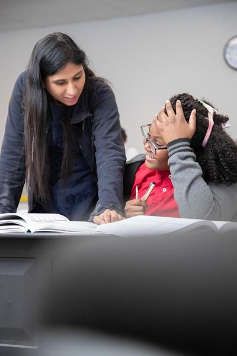

Future Minds High School (FMHS) prepares students to engage in a journey of continuous growth, lifelong learning, and insatiable curiosity. We believe in the potential of every child, and we are committed to helping your children realize the best in themselves so they can bring out the best in the world. But our success, and the success of our students, is in part because parents take an active role in their children's development, maturation, and education.
We provide multiple opportunities for parents to take a more active and engaged role in FMHS's enriching and nurturing learning environment including:
Volunteering ― Parent volunteers are always welcome at FMHS. Inside classrooms, on the playground, or on field trips, there are many opportunities for interested parent volunteers to help. Student safety is paramount at FMHS, so all volunteers must obtain a fingerprint clearance card. If interested in volunteering at FMHS, please contact us for more information.
Parent Advisory Committee ― FMHS's Parent Advisory Committee (PAC) is comprised of parents who facilitate fundraising efforts for the school. All parents of FMHS students are eligible for one of the five elected representative positions (chairperson, vice-chairperson, treasurer, secretary, and fundraiser coordinator), and all parents are encouraged to attend monthly PAC meetings. If interested in becoming involved with the PAC at your child's school, please contact the school directly and ask for more information.
